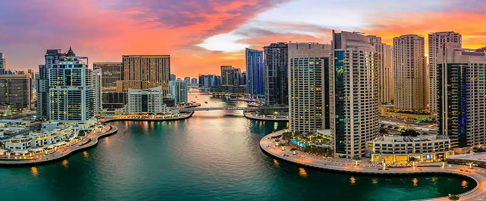

___________________________Dubai Emirados Árabes Unidos___________________________
<> Dubai é uma cidade e um emirado dos Emirados Árabes Unidos conhecida pelos shoppings de luxo
pela arquitetura ultramoderna e pela animada vida noturna. Burj Khalifa, uma torre de 830 metros de altura,
domina a linha do horizonte repleta de arranha-céus. Na base, há a Fonte de Dubai, com jatos de água e luzes
coreografados ao som de música. Nas ilhas artificiais próximas à costa, fica o Hotel Atlantis, um resort com
jatos de água e luzes coreografados ao som de música. Nas ilhas artificiais próximas à costa, fica o Hotel Atlantis,
um resort com parques aquáticos e de animais marinhos.
Dubai Emirados Árabes Unidos

Burj Khalifa:
<> Burj Khalifa Bin Zayid, anteriormente conhecido como Burj Dubai, é um arranha-céu localizado em Dubai, nos Emirados Árabes Unidos,
sendo a mais alta estrutura e, consequentemente, o maior arranha-céu já construído pelo ser humano, com 828 metros de altura e 160 andares
o maior arranha-céu já construído pelo ser humano, com 828 metros de altura e 160 andares.